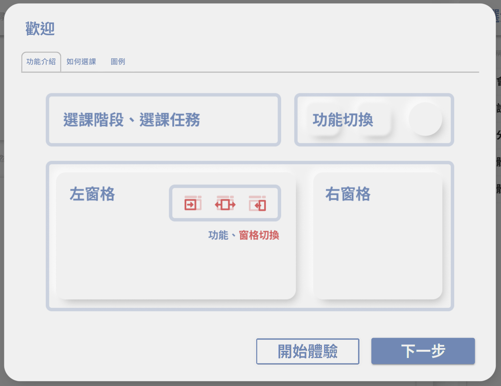
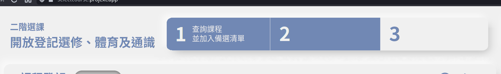
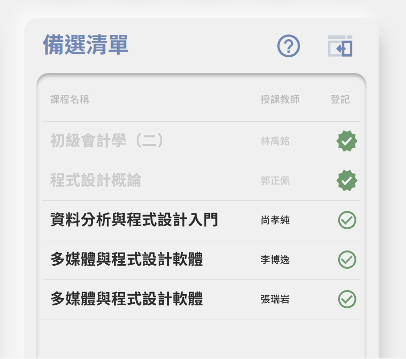
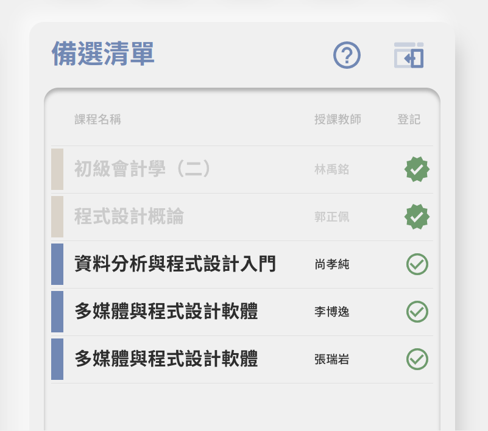
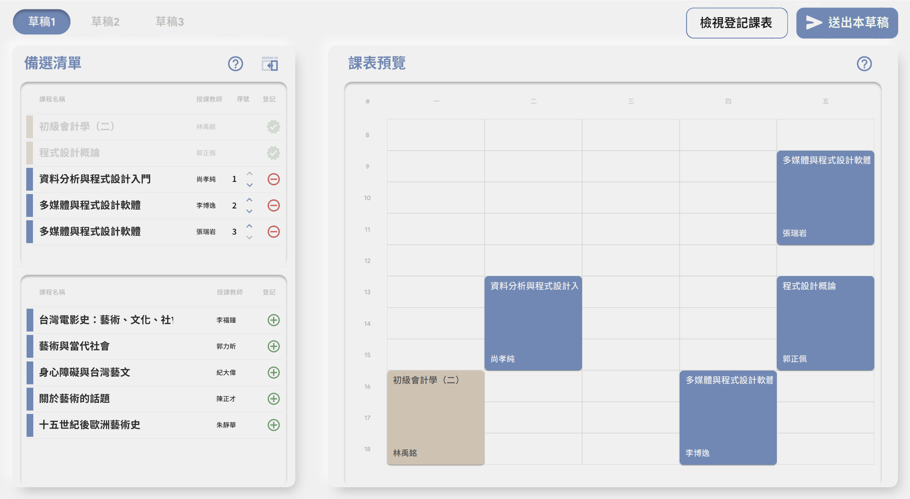

GDSC Select-Course System Usability Exploration
Preface
This small article is written after a bit of poking around a supposed replacement for the Course Selection System of NCCU, the current university I’m in. The old system is a mixed bag of old IIS/ASP with a separate(!) course exploration system based on Javascript. Moreover, they have two completely different UIs and conventions, and needless to say, the whole experience is pretty confusing for freshmen like me last year.
So a team led by the Google Developer Student Club (GDSC) aspired to change this horrendous spaghetti-mix into a more streamlined experience. They tried to implement most parts of the system in a single website, and modernized the UI with Google elements. The frontend (and backend presumably) is written in Flutter. (UPDATE according to the PM they use React.) Good idea, isn’t it?
Nevertheless when they opened the system up for public beta-testing, I find some UI elements and paradigms either clunky to use, or doesn’t feel straightforward, so I decided to document my personal pain-points and make some mockups to better illustrate what I was looking for. Therefore these are all my personal opinions, and should not be viewed as advice.
The rest of the article is in Chinese. Grab a translator if you feel like it!
登入頁面
- Firefox開不進選課系統（點擊Google登入後會出現oauth視窗，但有時登入完Google帳號會卡在oauth視窗轉圈圈的頁面，有時oauth視窗會關掉但依然顯示登入失敗）（Firefox版本：98.0.2）
歡迎pop-up
- 「功能介紹」僅列出各區名稱，並未列出各區互動方式，如到了這個階段，使用者依然不知道「選課階段、選課任務」可以下拉
- 可有如同caurosel的按鈕設計：
+--------------+ +---------+
| Introduction |_______________ | Symbols |____________________
| | | |
| ... | | ... |
| | | |
| [Start exploring] [ Next ] | | [Start Exploring] |
+------------------------------+ +------------------------------+
選課階段/任務百分比條
因為很有可能在選課之後再回去改選課清單，因此百分比不知道有何意義
可將下拉式選單改為Dashboard式顯示法（類似下面這樣）

- 不但可以顯示所有東西，也可以做成可點擊區域，點擊後帶到相關分頁
- 但如果決定拿掉百分比概念，則只能highlight一個
分頁概念
- 非線性
- 目前排列為「課程登記」￫「備選清單」￫ 「課程搜尋」￫「課程地圖」
- 實際上選課的順序：
課程地圖 -+ |--> 備選清單 -> 課程登記 課程搜尋 -+- 也就是說真正的「選課」是在「備選清單」與「課程登記」，而「課程地圖」與「課程搜尋」為參考資料
- 因此可以考慮要不要把「課程地圖」與「課程搜尋」放左邊，「備選清單」與「課程登記」放右邊
- 或是將這些步驟與上面的「選課階段/任務百分比條」進行整合，例：
類似這樣。如此一來也不用考慮分頁與左右panel問題。第一步「查詢課程並加入備選清單」 +--------+____________ +--------------------------+ | Search | Course Map | | Waitlist | + +------------+-------+ | | | | | | | | | | | | | | | | | | | | | | | | | | +-----------------------------+ +--------------------------+ 第二步「挑選備選清單並加入登記課表」 +--------------------------+ +-----------------------------+ | Waitlist | | Register Courses | | | | | | | | | | | | | | | | | | | | | | | | | | | | | +--------------------------+ +-----------------------------+ - 與其他人提過的相同，各個按鈕沒有文字輔助，想表達的東西無法一目了然
- 不如將文字敘述加在icon下面？
備選清單
備選清單與登記課表中可以列出必修並Gray out

備選清單項目可以與課表相同，有顏色

類似這樣
備選清單與登記課表的互動
- 「加入登記課表」不直覺（右邊加入左邊？）
- 「草稿」概念不直覺
- 例：我選了草稿一，打勾了，然後為什麼到草稿二又消失了？在登記課表又是什麼時候出現？
- 左邊是「課程登記」的「登記課表」頁面的時候，右邊打勾或取消打勾會跳到草稿一
- Undefined Behavior?
- 順序問題
- 目前順序：登記課表 ￫ 草稿{一,二,三} ￫ 送出按鈕
- 實際選課順序：草稿{一,二,三} ￫ 送出按鈕 ￫ 登記課表
- 也許可以改成以草稿為主的模式，如下圖

課程詳細資訊
- 點擊課程 ￫ 課程評價：「按讚」的地方，如果快速點很多下會當掉（顯示點兩次讚或是讚亮起來但顯示0次）
- 下方「查看/填寫課程評價」按鈕：在hover之後改變文字是否會傷到accessibility呢？
- 可以考慮改成「前往課程評價網查看/填寫課程評價（方框加往外箭頭）」，或「查看/填寫課程評價（方框加往外箭頭）」
- 至少讓使用者知道自己將打開新的網頁
- 複製課程代碼無visual feedback（如「已複製」）
- 無法取消備選
- 從「課程搜尋」列點開課程詳細資訊的時候，可以像從備選清單點開一樣有「加入備選」按鈕
說明
- 每個說明目前都是開同一個頁面，若可以提供各項分別的說明會更好
Last updated: 2022-10-06